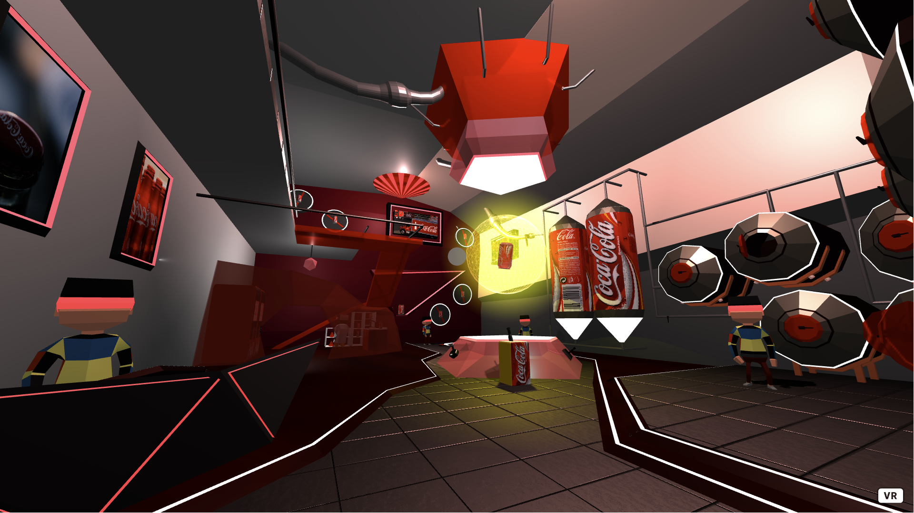
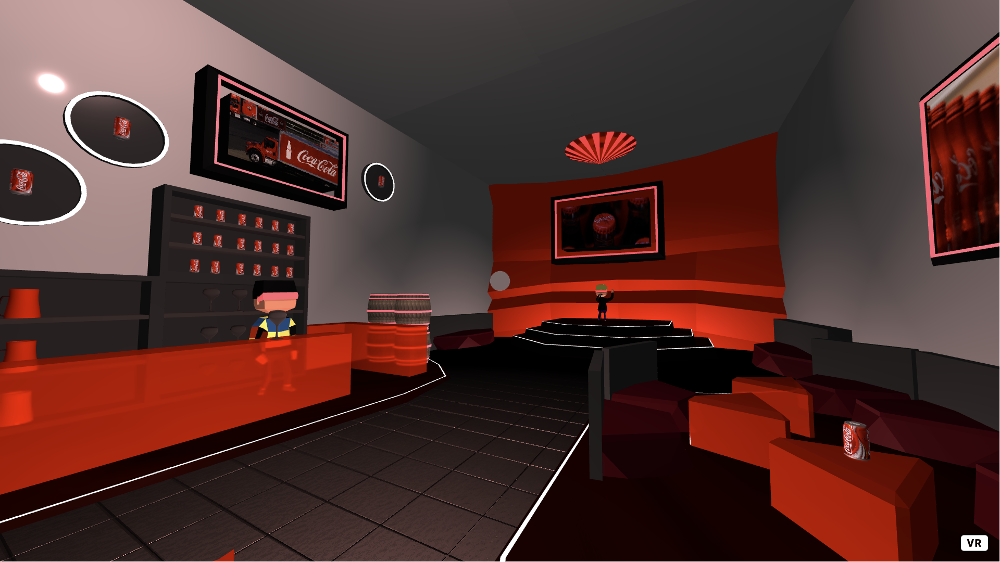
Coca-Cola Virtual Reality Exhibition
An immersive virtual reality exhibition built for a bachelor’s VR/AR course, designed to let users explore and interact with a branded Coca-Cola virtual space.



An immersive virtual reality exhibition built for a bachelor’s VR/AR course, designed to let users explore and interact with a branded Coca-Cola virtual space.
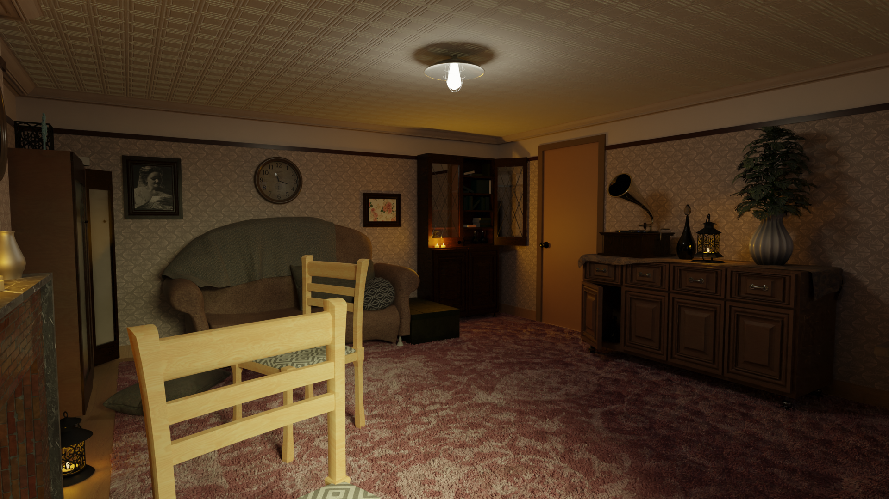
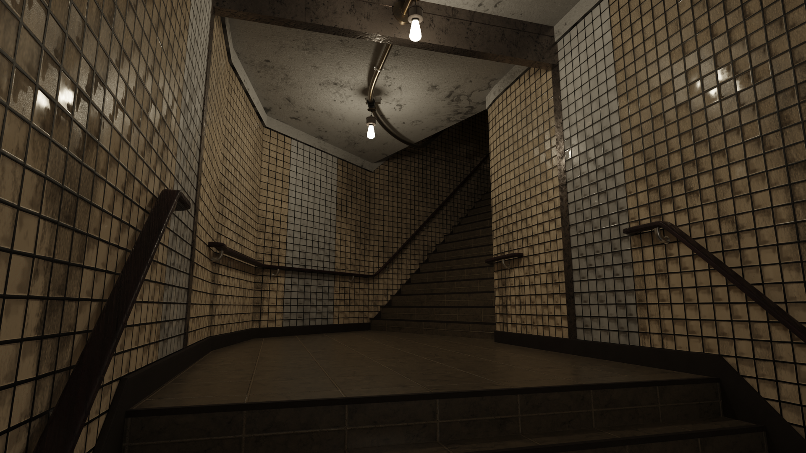
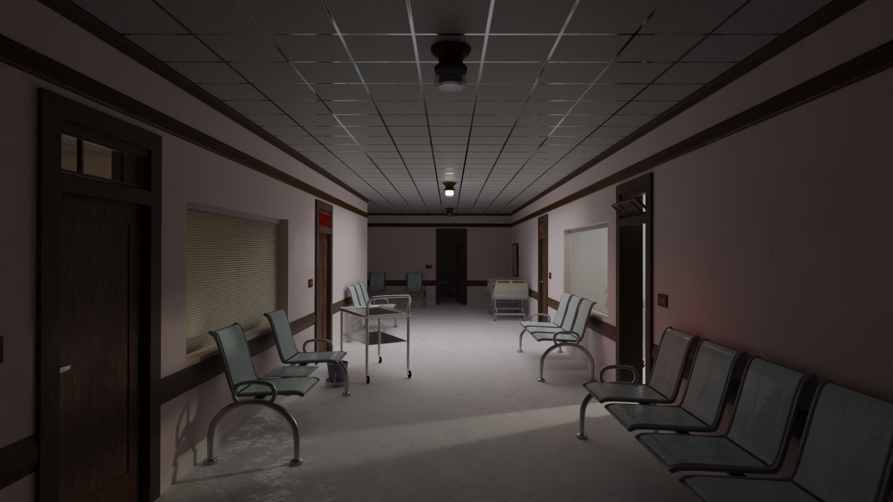
A 3D animated short film about war and PTSD, created as an independent bachelor’s project using environmental storytelling and animated scenes.
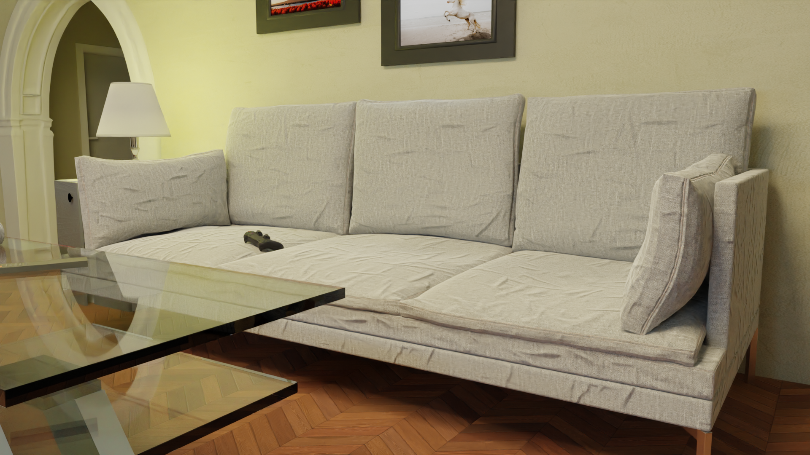
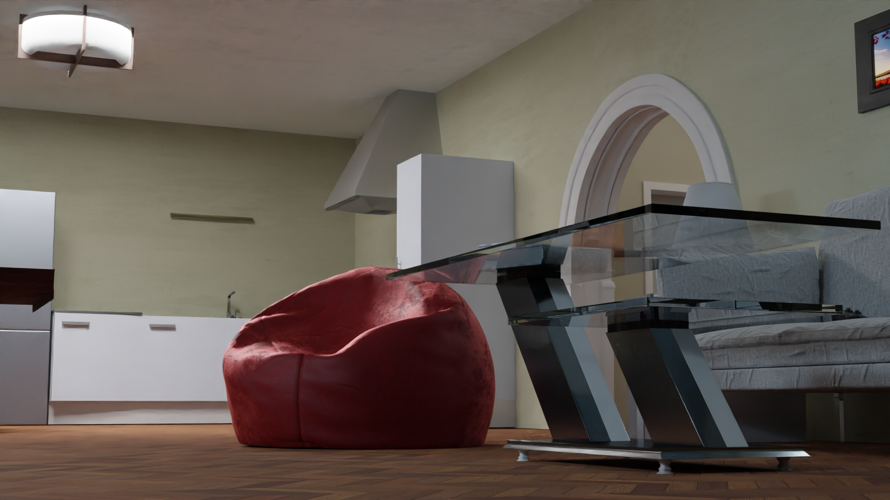
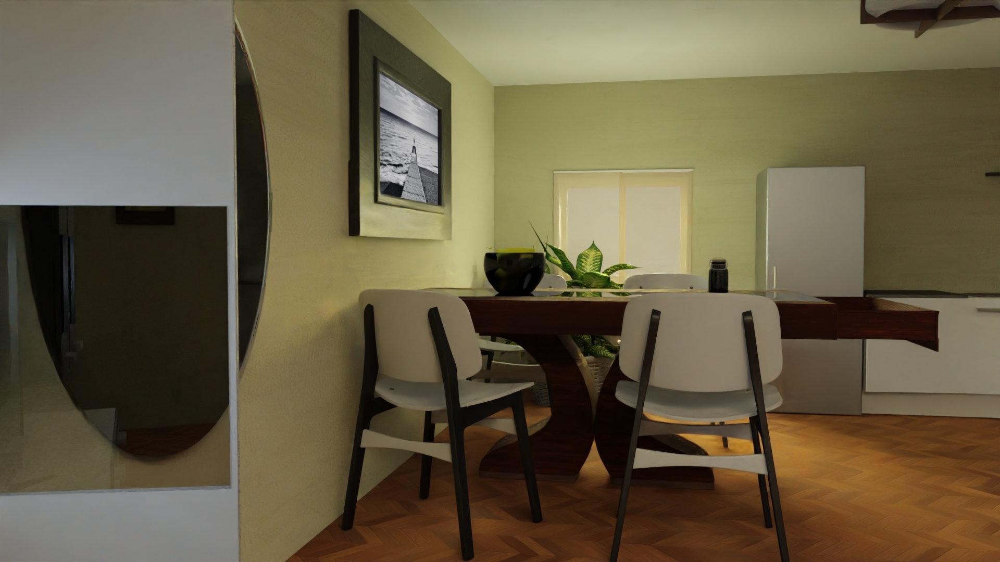
A collection of interior scenes and 3D models focused on environment building, composition, and the presentation of modeled spaces and assets. Part of Bachelor’s studies in Audiovisual Art.
"Redecorate" is a 3D artwork about grief, memory, and the difficult choice families face when dealing with a deceased loved one’s personal space. It depicts a quiet attic bedroom filled with toys, covered furniture, and packed boxes, capturing a room in a suspended state between being kept intact and being cleared out. Inspired by the Twenty One Pilots song of the same name, the piece asks whether a space full of memories should be preserved as it was or transformed into something new.
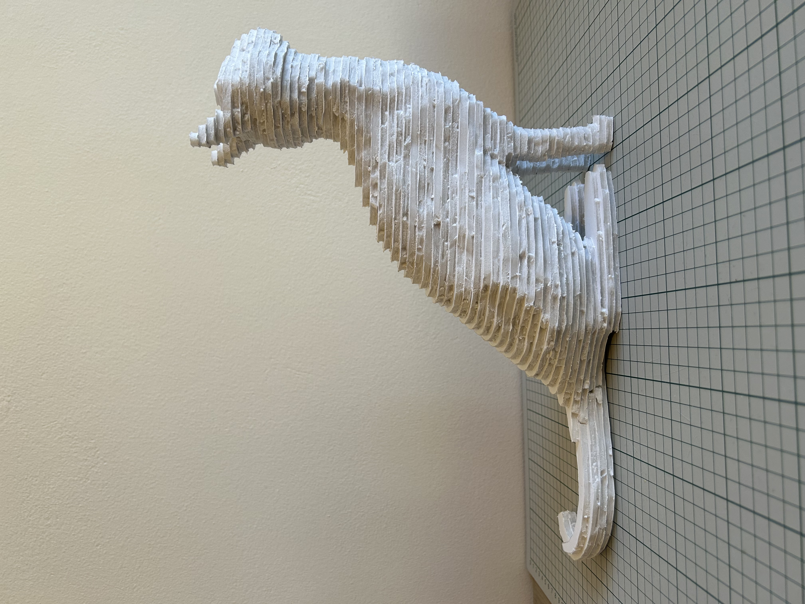
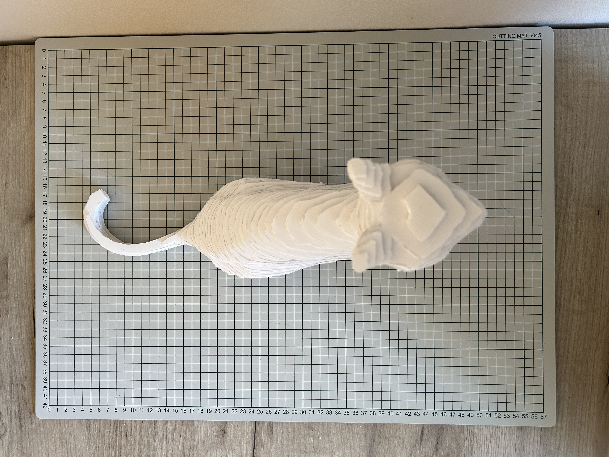
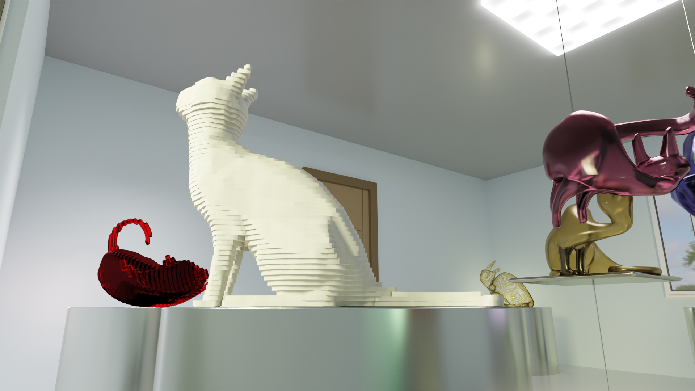
A mixed project combining digital 3D character work with physical cardboard prototyping to explore form, construction, and iteration across media.
A motion-driven typography project exploring timing, composition, and the expressive use of text through animated 2D visual language.
An audio-visual performance project built in TouchDesigner, combining sound, motion, and reactive visual composition into a live multimedia piece. “Voyager” is a seven-and-a-half-minute audiovisual work that aims to evoke the feeling of a space journey through the combination of sound and image. It uses an abstract 2D visual language alongside an atmospheric soundtrack to create an imagined interstellar environment, where the audio is the primary element and the graphics are shaped around it. The piece is structured in three parts: the launch, the journey through space and through a wormhole to a distant planet, and finally the exploration of that planet and contact with its native civilization.
A selection of sound design studies exploring audio construction, layering, and mood across different short-form media pieces.